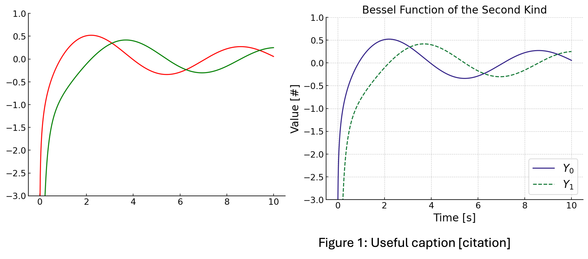

This blog post is a written version of the talk I have given to the UIUC ANS chapter several times now. Hopefully you can gain pertinent advice for your abstracts. The Advanced Reactors and Fuel Cycles (ARFC) Group has a writing checklist that I highly recommend you consult (we worked hard on it).
A conference abstract is a concise summary of a research project or study that is submitted to a conference for consideration. In it, you provide a brief overview of the research problem, methodology, key findings, and conclusions. Your goal should be to highlight the significance and novelty of the research, allowing conference organizers and attendees to evaluate its relevance and potential contribution to the field. You're wetting their appetite for your work, show them why they should care.
1. Understanding the Requirements
When preparing an abstract for a national conference, you have to familiarize yourself with the official requirements of that event. For example, the American Nuclear Society (ANS) Student Conference typically requires abstracts to be 1-4 pages long and in the ANS template. Ensure your abstract is submitted by the deadline mentioned in the conference's call for papers. Knowing these before you go to submit will save you all kinds of headaches, trust me.
2. Considerations and Unofficial Requirements
In addition to the official requirements, there are some unofficial considerations for when you are crafting your abstract like which track you submit to. Your work may fit in multiple tracks, but a careful track selection could help your chances of winning a best paper or presentation award.
Another aspect to consider is selecting co-authors versus acknowledging contributors. Co-authors should have directly supported your work, but there isn't a strict rule for this distinction that I know of. If you ask someone to be a co-author, they must have time to review and make any necessary changes or additions to the work before submission. If they are not aware of the abstract by the week of the deadline, you may be too late to include someone as a co-author.
3. Crafting Your Story
Before diving into the details, it's crucial to identify your central theme or story. Ask yourself what you want to convey to the audience. My primary purpose for presenting at a conference is advertising what I have done work. You want someone to remember your work so you can continue the conversation later and get into the nitty gritty with them.
Once you have your story in mind, create an outline that covers the essential elements (we're not reinventing the wheel here):
an introduction to the problem,
background information on its significance,
and the theoretical basis supporting your work.
If the work has already been completed, you should hint at some conclusions and results. Remember, you're wetting their appetite.
4. Crafting an Effective Title
When formulating the title for your abstract, aim for a concise and attention-grabbing phrase of fewer than 12 words. Front-load the keywords to ensure immediate relevance. Remember that the title acts as the first advertisement for your work, enticing readers to explore further (they'll see it on the conference website).
5. Keep your citations simple
The biggest thing you should pay attention to with citations is maintaining consistency with your chosen style. If you are not sure, pop it into Google and the first result should be the thing you are citing. This helps establish the credibility of your references and makes your work more reproducible.
6. Effective Use of Graphics
Incorporating graphics into your abstract can enhance its impact, but here are some guidelines. Your graphics must be:
central to your work,
intuitive to understand,
and readable.
Evaluate each image or table by asking yourself if they can effectively convey your conclusions, if they are easy to understand to someone without context, and if they are accessible to individuals with visual impairments or color blindness. Utilize shapes rather than relying solely on colors to enhance accessibility where possible. When you do include colors, consult a site like Coloring for Colorblindess.

One of these plots is everything I can think of wrong with a plot, and the other is a decent start (you can guess which is which).
7. Addressing Common Mistakes and Pet Peeves
Now I'll list some things that bother me; please know that I'm not a hater.
Avoid fluff, it weakens your writing.
Remember that "data" is plural, so use it accordingly.
Keep your voice active. When you ensure that your nouns and verbs are close together, you can solve almost any clarity issue.
Limit the use of adverbs, they weaken scientific writing.
Reserve the term "significant" for statistically significant findings.
Effective communication is fundamental in STEM fields, so ensure your writing is clear and precise.
By following these guidelines and incorporating valuable advice, you can effectively craft your abstract, attract attention to your research, and confidently make it to a conference.